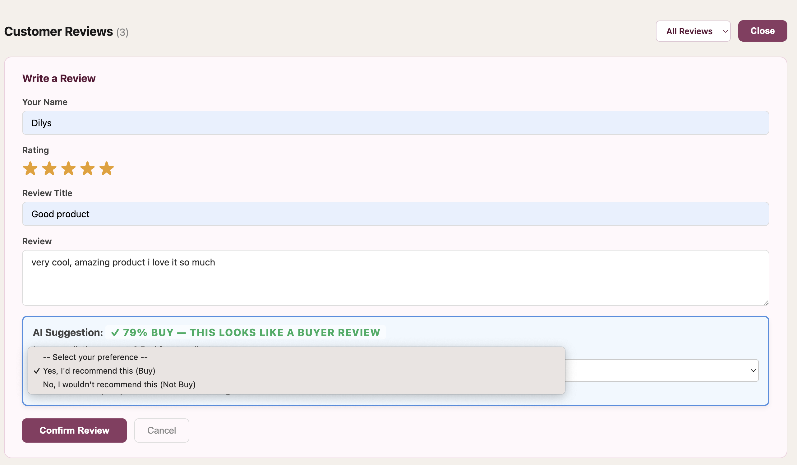
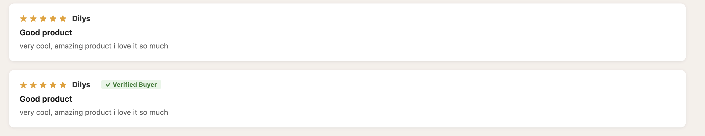
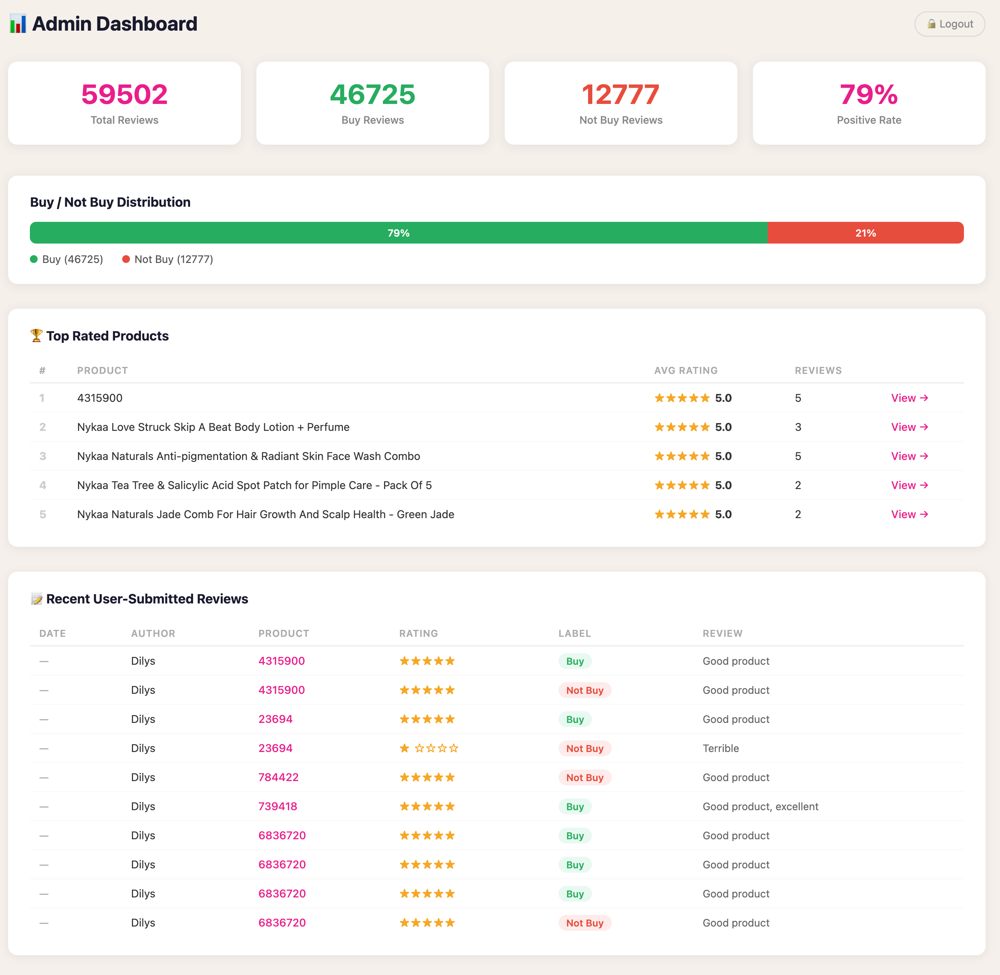

NLP Web-Based &
Multimodal Ensemble Pipeline
A collaborative full-stack Flask data platform mitigating e-commerce review spam via custom semantic search engines, automated text normalization pipelines, and specialized hybrid voting classifiers.
Core Technologies Implemented
Individual Ownership: Machine Learning & Backend Logic
While contributing to the team's shared architectural blueprint, web endpoints, and system database setups, my core standalone development ownership focused entirely on engineering the platform's algorithmic core: the Machine Learning Logic Pipelines.
Task 1: Intelligent Semantic Search
Engineered an advanced search algorithm utilizing TF-IDF Vectorization and Cosine Similarity. Supports query processing in similar forms, resolving brand/description variants (e.g., matching "Maybeline" and "maybeline New York" identically) instead of basic exact-string matching.
Task 2: Multimodal Ensemble Core
Architected a weighted soft-voting fusion classifier that executes parallel models concurrently (Logistic Regression and Random Forest). It isolates e-commerce structural sarcasm by explicitly anchoring text semantics against numerical star rating parameters.
Confidence & Override Logic
Programmed the mathematical probability calculations to output real-time AI Confidence Scores. Formulated backend logic supporting human-in-the-loop auditing, allowing reviewers to manually override AI-suggested "Buy/Not Buy" binary labels.
Task 3: Hybrid Recommender Matrix
Developed a content-based recommendation engine powered by a custom hybrid similarity measure. It merges high-dimensional textual features (descriptions) with normalized numerical item attributes (prices/ratings) to instantly yield a set of similar items.
Shared Platform Architectural Modules (Team Contribution)
To support the core machine learning services, the team engineered the surrounding web application ecosystem and full-stack operational features:
- Full-Stack Web Core: Built the centralized Flask application infrastructure, handling multi-perimeter routing, request filtering, and session state configurations.
- E-Commerce Checkout & Buy Button: Implemented the active shopping cart workflow, inventory triggers, and persistent transactional states (
is_buyer = True) for verified consumer badges. - Real-Time Admin Dashboard: Deployed a centralized telemetry monitoring panel aggregating macro-level market sentiment graphs, overall score weights, and logged automated prediction streams.
- Responsive UI/UX Frontend: Designed, structured, and styled all responsive client-facing web views, feedback input boards, and dynamic validation displays.
Problem Statement & Solutions
Modern e-commerce ecosystems are heavily saturated with "ghost reviews" generated by automated bots or non-purchasing users. Furthermore, traditional text sentiment classifiers consistently fail to detect nuanced linguistic noise, sarcasm, or ambiguous textual feedback (e.g., "Amazing quality, broke in 2 minutes!"), corrupting product recommendation metrics.
To solve this, our team implemented a dual-layer approach: a System/UI Layer establishing a strict, closed-loop verified purchase pipeline, and an Artificial Intelligence Layer (My Core Work) deploying a multimodal hybrid voting matrix that fuses review text semantics directly with user star ratings.
System Architecture & Engineering
1. Intelligent Custom Semantic Search
Instead of matching strings verbatim, queries are dynamically tokenized, converted to lowercase, and stripped of non-informative stop words. I engineered a vectorization layer via a trained TF-IDF Pipeline mapped against a standardized vocabulary matrix. It computes real-time Cosine Similarity scores across cached memory structures, utilizing custom business weights to boost target visibility fields:
- Brand Matches: Multiplied by a factor of 10x to ensure corporate catalog alignment.
- Title Matches: Multiplied by a factor of 5x to elevate literal keyword hits.
- Fallback Subsystem: Integrates a robust regex-based processing backup to secure system fault-tolerance during zero-vector returns.
2. Weighted Multimodal Ensemble Model Design
To minimize prediction variance and isolate structural sarcasm, I compiled individual machine learning models as serialized .pkl artifacts, executing them concurrently through a specialized, weighted decision grid with a high-precision threshold limit (≥ 0.7):
Logistic Regression
(45% Weight)
Optimizes high-dimensional sparse vector coefficient layers generated by the text data tokenizer, establishing the core semantic baseline score.
Random Forest
(45% Weight)
An ensemble tree classifier designed to capture deep, non-linear text metadata interactions while preventing overfitting across high-volume transaction catalogs.
Star Rating Tracker
(10% Weight)
Acts as a multimodal feature anchor to explicitly contextualize text sentiment against numerical limits, neutralizing sarcastic text distributions.
3. Human-In-The-Loop Data Auditing & UI
When a customer completes a checkout event via the in-memory shopping cart, the system triggers an internal state flag (is_buyer = True). If that user subsequently posts product feedback, the backend interceptor automatically renders a ✓ Verified Buyer Badge. Unverified entries are passed directly to my machine learning engine, exposing real-time AI Confidence Scores on the administrative dashboard interface for continuous model auditing and review validation.
Production Environment Walkthrough

Integrated an intelligent client-facing review subsystem. As users compose feedback, my underlying ensemble classification logic processes the text real-time to generate predictions, while the frontend components deliver manual override controls for final user validation.

A clean, responsive feedback thread displaying fully committed customer evaluations alongside verified consumer trust badges, co-designed to parse star ratings and optimize cross-client readability.

A centralized administrative monitoring portal aggregating macro market sentiment. It pipelines individual review prediction data streams directly from my machine learning core into system telemetry tables to verify model reliability.
System Limitations & Future Roadmap
Demonstrating modern engineering maturity requires identifying current pipeline boundaries and detailing actionable infrastructure optimization paths:
- Current Architectural Limits: The platform relies on a session-based state instead of fully persistent centralized databases, model updates require manual script reloading, and administrative credentials are statically hardcoded in configuration files.
- Future Optimization Roadmap: Implement robust Role-Based Access Control (RBAC) via secure hashing (e.g., bcrypt), automate model retraining schedules using live user feedback streams, and expand the recommendation system from content-based filtering into collaborative matrix-factorization.